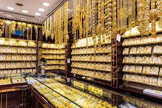
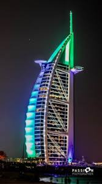
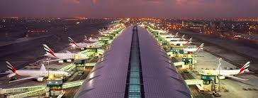
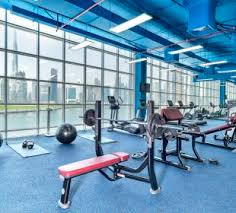
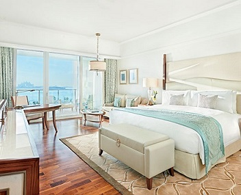

Dubais Entwicklung
Dubais Aufstieg vom See- und Handelshafen zu Beginn des 21. Jahrhunderts zu einer globalen und unglaublich vielfältigen Geschäftsdestination im Herzen der neuen Seidenstraße ist eine internationale Erfolgsgeschichte. Besonders signifikant ist dabei, dass diese Entwicklung in einem relativ kurzen Zeitrahmen realisiert wurde. In den 60er Jahren des 20. Jahrhunderts begann der alles verändernde Wandel, der zum modernen Dubai führen sollte, mit einigen zukunftsweisenden Initiativen, darunter die Eröffnung des Flughafens von Dubai und die erste internationale Verbindung von Kuwait Airways im darauffolgenden Jahr. 1965 wurde die Industrie- und Handelskammer von Dubai gegründet. Hierauf folgte gegen Ende des Jahrzehnts der Goldmarkt von Dubai, der damals als drittgößter Goldeinkäufer auf dem freien Markt galt. In den 70er Jahren wurden weitere Förderinitiativen entwickelt und schließlich wurde 1979 der Grundstein gelegt, der es ermöglichte, das Emirat auf eine wichtige Position auf der internationalen Bühne zu katapultieren. Innerhalb von zwölf Monaten wurden in Dubai eine Reihe wichtiger Institutionen wie Dubai Cable, die Dubai Trockendocks, der Hafen von Dschabal Ali, Dubai Aluminium, und das Dubai World Trade Centre eingeweiht. 1979 empfing das wachsende Emirat außerdem Königin Elisabeth II. im Rahmen ihres Staatsbesuches in den Vereinigten Arabischen Emiraten.
Während Dubai als Stadt weiter aufblühte, nahm in den frühen 80er Jahren auch die Hotelbranche an Fahrt auf. Viele der damals eröffneten Hotels gibt es noch heute, darunter das Hyatt Regency und das Jebel Ali Golf Resort & Spa. Doch erst die Gründung der Emirates Airline im Jahr 1985 gab den internationalen Verbindungen Dubais den entscheidenden Schub – diese Tatsache hat auch heute noch Bestand.
So hatte sich Dubai bis in die 90er Jahre völlig verändert – es gab eine zeitgemäße Infrastruktur mit zwei hochmodernen Häfen, einem internationalen Flughafen, dem Flaggschiff Emirates Airline, einer erstklassigen Freihandels- und Industriezone in Jebel Ali und einer wachsenden multinationalen Bevölkerung - die Stadt wurde zur blühenden Metropole.Top
In dieser Zeit vollzog sich eine beispielhafte schnelle Entwicklung in den Bereichen Tourismus, Einzelhandel, Unterhaltung, Freizeit und Sport. Dubai nutzte seine Vorzüge in den Bereichen Hotel und Gastgewerbe sowie die eigene Airline, um in rasantem Tempo zur Weltklasse-Destination für Reisende aus der ganzen Welt aufzusteigen.Top
Die Hotelbranche gilt seit Mitte der 90er Jahre als einer der besten Parameter, um das Wachstum Dubais zu ermessen. 1996 gab es in Dubai nur 293 Unterkünfte mit etwas mehr als 15.000 Zimmern, doch bis zur Jahrtausendwende waren in der Stadt weitere 100 Hotels mit 11.000 Zimmern entstanden, darunter das Wahrzeichen Burj Al Arab, das damals höchste Hotel der Welt und ein Symbol, das auf der Weltbühne für Dubai stand. Ab dem Jahr 2000 wuchs der Gastgewerbesektor von Dubai noch schneller: In der Stadt entstanden zwischen 2000 und 2010 rund 44.000 Zimmer in weiteren 180 Unterkünften. Dieser Trend besteht bis heute fort, inzwischen stehen in 681 Unterkünften über 100.000 Zimmer in verschiedenen Stadtteilen bereit.Top
Das Wachstum der internationalen Verbindungen – ein wichtiger Schlüssel zum Erfolg und zur Vielfalt jedes Geschäftszentrums – ist ebenfalls ein Teil der Geschichte Dubais. Während 1970 nur eine halbe Million Passagiere am Flughafen Dubai International abgefertigt wurden, wuchs diese Zahl bis 1990 auf fünf Millionen und bis 2000 auf 12,3 Millionen. Die Kapazitäten wurden durch das fortschrittliche Open-Skies-Abkommen, den neuen Komplex Dubai World Central, die florierende Emirates Airline und Dubais zweite Fluggesellschaft Flydubai weiter vorangetrieben. Durch dieses unglaubliche Wachstum der letzten 16 Jahre konnte Dubai seine Stellung als globale Drehscheibe einnehmen. Seit Beginn dieses Jahrzehnts im Jahr 2010 stieg die Zahl der internationalen Passagiere, die über Dubai flogen, von 47,2 Millionen pro Jahr auf fast das Doppelte, Ende 2016 waren es dann 83,6 Millionen Passagiere. Diese Zahlen bestätigen Dubais Stellung als Flughafen mit dem höchsten internationalen Verkehrsaufkommen. Mit der Eröffnung des Terminals Concourse D wuchs die Kapazität auf 90 Millionen Passagiere pro Jahr, und der neue Flughafen Dubai World Central wird in Zukunft bis zu 160 Millionen Passagiere pro Jahr abfertigen können. So sichert Dubai auf absehbare Zeit seine Vorherrschaft als erstklassiges Networking-Zentrum, in dem Menschen, Waren und Dienstleistungen miteinander vernetzt werden